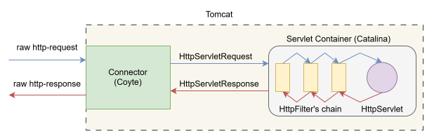

Основа под Spring MVC
Архитектура “сервлетов”
- Примерная схема того о чем пойдет речь

Сервлеты
Сервлеты - это спецификация из Jakarta
Java EEиJakarta- это синонимы. Это набор спецификаций для реализации серверных программ на джаве. Грубо говоря, преимущественно это набор интерфейсов, которые описывают концепцию системы, какие в ней компоненты, как они связаны и взаимодействуют. Одним словом, архитектура.- Сервлеты - это одна из таких спецификаций.
Что такое сервлет
Сервлет- это по сути минимальный кирпич веб-приложения.- Технически это класс-наследник от HttpServlet, в котором есть специальные методы вроде doGet, doPost и т.д. Мы пишем в них код обработки запроса.
- https://jakarta.ee/specifications/platform/11/apidocs/jakarta/servlet/http/httpservlet
- Я тут под “сервлетом” буду подразумевать именно http-сервлет, а вообще есть еще как бы “сервлет общего назначения”, но нас он не интересует.
- Как (примерно) пишется веб-приложение на сервлетах
- Пишем сервлеты, отмечаем их аннотацией @WebServlet.
- Аннотация маркирует класс как сервлет, плюс через нее задается маппинг на URL.
- Компилируем программу в war-архив (Web Application aRchive).
- Подсовываем архив контейнеру сервлетов (например Tomcat).
- Когда приходит http-запрос, Tomcat его ловит и передает в нужный сервлет.
- Ответ сервлета Tomcat возвращает клиенту.
- Пишем сервлеты, отмечаем их аннотацией @WebServlet.
@WebServlet("/hello")
public class HelloServlet extends HttpServlet {
@Override
protected void doGet(HttpServletRequest req, HttpServletResponse resp)
throws IOException {
// читаем query-параметр: /hello?name=Иван
String name = req.getParameter("name");
if (name == null || name.isBlank()) {
name = "world";
}
// задаём тип ответа и кодировку
resp.setContentType("text/html; charset=UTF-8");
try (PrintWriter out = resp.getWriter()) {
out.println("<!DOCTYPE html>");
out.println("<html><body>");
out.println("<h1>Hello, " + name + "!</h1>");
out.println("</body></html>");
}
}
@Override
protected void doPost(HttpServletRequest req, HttpServletResponse resp)
throws IOException {
// можно делегировать в doGet или обработать отдельно
doGet(req, resp);
}
}- На сервлетах приложения сейчас конечно не пишутся, это низкоуровневый инструмент. Но все веб-фреймворки, вроде Spring MVC так или иначе работают поверх сервлетов.
Tomcat = веб-сервер + контейнер сервлетов
- Tomcat - это не только контейнер сервлетов, но и веб-сервер. Т.е. он
- Ловит приходящие http-запросы, т.о. выполняет роль веб-сервера.
- Разбирает запрос и формирует из его данных объекты, понятные сервлету, например HttpServletRequest.
- Разбирается, для какого сервлета предназначен запрос.
- Создает инстансы сервлетов и передает им объект запроса. Все это уже роль контейнера сервлетов.
- Когда сервлет отработал и вернул объект ответа, томкат делает из него http-ответ и возвращает клиенту.
- Буду везде писать “томкат” как синоним “веб-сервер + контейнер сервлетов”.
- Несколько фактов о томкате
- Компонент томката, который реализует функциональность контейнера
сервлетов называется
Catalina.- Она управляет жизненным циклом сервлетов, т.е. создает их, уничтожает.
- Сервлеты создаются как синглтоны.
- Томкат ищет сервлеты на основе аннотации @WebServlet. Нам нужно просто положить .war с сервлетами в нужную папку томката и он автоматически их подхватит.
- Компонент томката, который реализует функциональность контейнера
сервлетов называется
Фильтры
- Фильтры - это еще один этап обработки запроса.
- https://jakarta.ee/specifications/platform/11/apidocs/jakarta/servlet/http/httpfilter
- Перед тем как попасть в сервлет, запрос проходит через фильтры.
- Фильтры представлены цепочкой. В ней может быть как один, так и много фильтров.
- Фильтры привязаны к URL, т.е. можно для разных запросов делать разные цепочки фильтров.
- Фильтры можно использовать в разных целях
- Сквозная функциональность - добавлять логирование, метрики, различные проверки, обогащение запроса дополнительными данными, реализовывать идемпотентность и т.д.
- Можно написать какое-то условие и например не пропустить запрос дальше к сервлету, а вернуть ответ сразу из фильтра.
public class LoggingFilter implements Filter {
@Override
public void doFilter(ServletRequest request,
ServletResponse response,
FilterChain chain)
throws IOException, ServletException {
// 1. Код ДО сервлета
System.out.println("Запрос пришёл: " + ((HttpServletRequest) request).getRequestURI());
// 2. Передаём (или не передаем) дальше по цепочке (в следующий фильтр или в сервлет)
chain.doFilter(request, response);
// 3. Код "на обратном пути из сервлета"
System.out.println("Сервлет отработал, записал ответ в ServletResponse");
}
}Коннекторы
- Коннекторы - это не часть Java EE, а скорее просто концептуальный элемент, который так или иначе присутствует наверное во всех контейнерах сервлетов, но называться может по-разному.
- В Tomcat коннектор называется
Coyote. - Задача коннектора - установить сетевое соединение, принять “сырой” http-запрос, преобразовать его в понятный сервлету вид и передать дальше - контейнеру сервлетов. И то же самое сделать на обратном пути - из ответа сервлета собрать “сырой” http-ответ и отправить его клиенту.
Настройки spring-приложения
Куда писать настройки
- Пишутся в файл
src/main/resources/application.yaml
spring:
application:
name: ndp
server: # На одном уровне со spring
port: 48085Имя
spring:
application:
name: ndp- В обычном соло-приложении можно сказать имя ни на что не влияет. Приобретает значение только когда приложение работает вместе с другими приложениями в экосистеме спринга.
Порт
spring:
application:
name: ndp
server: # На одном уровне со spring
port: 48085- Спринг веб-приложение работает на веб-сервере tomcat, экземпляр которого запускается на компьютере вместе с каждым спринг веб-приложением. Сколько приложений запущено, столько и томкатов. port задает порт томката, на котором будет доступно приложение.
Прием запроса
- TODO
Возврат результата
- Принято делать через static-методы из
ResponseEntity- Это обертка для удобного управления статусом, заголовками и телом
- Последовательность важна - сначала выбираем статус, потом ставим заголовки (если надо), потом тело (если надо)
- Методы статуса возвращают билдер BodyBuilder, на котором есть методы добавления заголовков, тела и просто build, если кроме статуса ничего не надо. Соответственно и методы заголовков тела тоже возвращают BodyBuilder. Метод build возвращает ResponseEntity
- P.S. Для себя я бы вероятно выбрал универсальный подход и писал бы без сокращений полную цепочку. Кода больше, зато единообразно.
- Это обертка для удобного управления статусом, заголовками и телом
return ResponseEntity.ok().body(someResult);Указание статуса
- Через отдельные методы для популярных статусов
ResponseEntity.ok(); // 200
ResponseEntity.badRequest(); // 400
ResponseEntity.notFound(); // 404
ResponseEntity.internalServerError(); // 500
// для некоторых других тоже есть, надо гуглить в моменте- Через универсальный метод для любого статуса
ResponseEntity.status(HttpStatus.OK);HttpStatus.OK; // 200
HttpStatus.BAD_REQUEST; // 400
HttpStatus.NOT_FOUND; // 404
HttpStatus.INTERNAL_SERVER_ERROR; // 500
// Остальные - гуглить в моментеДобавление заголовков
- через методы
.header(),.headers()на билдере
ResponseEntity.ok().header("Cache-Control", "max-age=3600")- Для некоторых заголовков также есть отдельные методы
- Можно добавлять пачку заголовков разом
Добавление тела
- через метод
.body()на билдере- он возвращает ResponseEntity
ResponseEntity.ok().body("hello");- Особенности
- В некоторые методы статуса можно передать тело напрямую, а в
некоторые - нельзя:
- Важно - если передать в метод статуса тело, тогда уже заголовки не добавишь, т.к. такой метод сразу вернет ResponseEntity, а не билдер
- В некоторые методы статуса можно передать тело напрямую, а в
некоторые - нельзя:
ResponseEntity.ok("hello"); // можно
ResponseEntity.internalServerError("hello"); // нельзяФормирование ResponseEntity
- через метод
.build()- если цепочка не заканчивается на .body() или в метод статуса не передано тело, надо собрать ResponseEntity явно через build
ResponseEntity.internalServerError().build();